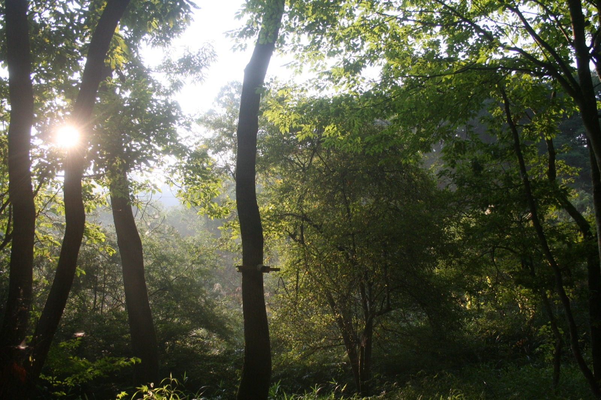
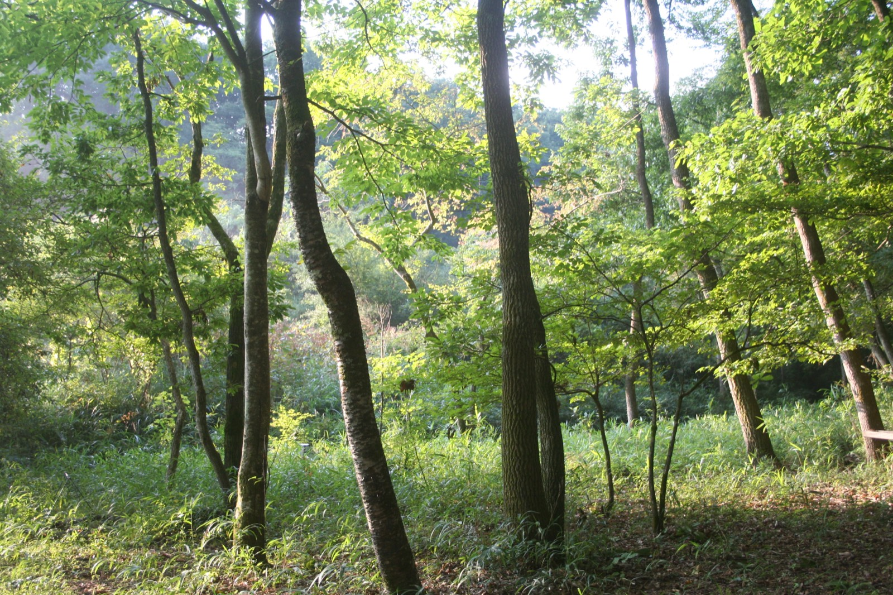
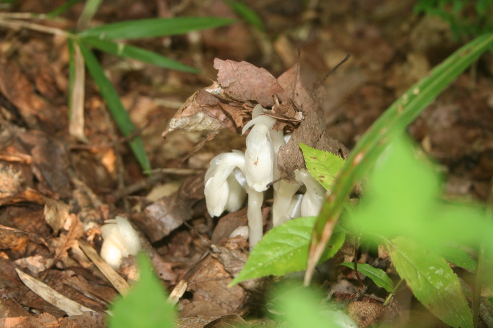

謎は、
宇宙の果てではなく、
ここにある。
意識——なぜ脳に、主観的な体験が宿るのか。
AIに回答不能な究極の問いを、今問う。
The greatest mystery is not at the edge of the universe. It is right here.
Concept理念
意識とは、何だろうか——。
この問いを発した瞬間、私たちの意識は動きはじめます。
科学がこれほど進歩した現代においても、
意識は、この宇宙でもっとも身近でありながら、
もっとも大きな謎の一つであり続けています。
そもそも、「意識」という概念は、いつ、どのように生まれたのでしょうか。
意識は、人間だけに存在するのでしょうか。
動物や植物、さらには機械にも、何らかのかたちで宿りうるのでしょうか。
あるいは、私たちに確かに言えるのは、
一人ひとりに主観的な意識体験があるということだけなのかもしれません。
そもそも、意識とは、世界をただ映し出すものではなく、
世界に価値を見いだす働きでもあります。
その意識は、喜びや苦しみを感じ、何かを大切に思い、
よりよく生きようと願います。
そして、そのよりよく生きたいと願う意識は、他者にも向けられ、
その願い、慈悲の意識こそが、私たちの社会を支えているのではないでしょうか。
意識のハードプロブレムから、一人称の意識の発見、
そして、意識の価値の問題まで——
縦横無尽に意識を問い直し、日常の中での実践に生かすことで、
よりよい人生と社会の実現に貢献する研究とその支援を行っていきます。
二つの軸Two Axes
意識の哲学的・科学的探求
なぜ物理的な脳に、そして機械に、主観的な体験（クオリア）が宿りうるのか。意識のハードプロブレムを中心に据え、哲学と科学の両面から意識の究極の問いに取り組みます。その上で、意識という概念の誕生と変遷に遡り、生きとし生けるものや機械をも含んだ意識の議論に向き合います。
一人称的な意識の発見
森・瞑想・仏教・里山・縄文——概念としてではなく、一人称的な体験として、多様な意識のあり方を発見します。森を実践のフィールドとして、非日常の意識と日常の意識の往復から見えてくるものを考察します。そして、どのような意識が、どのような生き方が良いのかという価値の問いに応答します。
研究プロジェクトResearch Projects
意識の究極の問いを中心に、研究プロジェクトを据えています。
いま3つのプロジェクトが進行中、4つのプロジェクトが構想中です。
意識とテクノロジーPJ
ハルシネーションマシンをはじめとする意識変容とテクノロジーの研究開発を支援。機械をも含んだ意識の議論に、実装から向き合います。
仏教と意識PJ
仏教の2500年にわたり体系的に行われてきた意識の探求、特に瞑想の実践の観点から意識の問題に迫ります。
意識と里山PJ
産業革命以前の暮らしにおける意識と時間のあり方を掘り下げます。宮沢賢治とベルクソンを参照しながら実践的に問い直します。
意識の根源探求PJ構想中
意識という概念・心は、いかに誕生したか。進化的起源と概念の系譜から、概念以前の意識を問います。
意識のハードプロブレムPJ構想中
なぜ物理的な脳に主観的体験（クオリア）が宿るのか。意識の究極の問いに、哲学と神経科学の両面から正面から取り組みます。
実験意識考古学PJ構想中
考古学的な考察と実験考古学の実践から、縄文をはじめとする古代の心のあり方を探ります。縄文遺跡が点在する森を、実践のフィールドとします。
自然計算AIPJ構想中
自然が行う計算に学び、生きとし生けるもの、あらゆる存在とその意識のあり方を汲んだAIの可能性を構想します。
4つのプログラムPrograms
カンファレンス
年に一度、意識の問いを公開の場で開きます。2026年は「マシン・コンシャスネス」をテーマに、10月24日・25日に行います。
研究支援
意識の問いを問う研究者への、グラントによる支援を構想中です。
森での活動
机上の議論だけでは、意識の「価値」には迫れません。フィールドとしての森を持ち、身体・生活・技術を通した実践的な探求を行います。
Discordコミュニティ
意識研究財団のプロジェクトに関わるメンバーが集うDiscordを運営しています。
森The Forest
「究極の問いを、
土地と森に降ろす。」
鳳凰三山の麓、縄文中期の精神文化圏の中心地に隣接する、
山梨県北杜市武川町の1.8万坪の山林。
2026年7月、この森を財団の実践フィールドとして取得しました。
この森には、約60名を収容できるホールを、
参加型のDIY施工により、数年をかけて建てていきます。
意識のカンファレンス、瞑想リトリート、時計やスマホを手放して過ごすプログラム——
研究者だけでなく、一般に開かれた実践の場をつくります。
森での非日常の意識と都市での日常の意識の往復により、意識の価値の問題に気づく。
それが、この場所の目指すところです。



森での実践より
Conference 2026カンファレンス
マシン・
コンシャスネス
マシンの意識と
ヒューマンの意識
基調講演：金井良太
マシンの意識は、ヒューマンの意識とどう関わるのか。ベイエリアで現に起きているマシン・コンシャスネス議論の文脈から出発し、正面から接続する一日。
マシンの意識と
モア・ザン・ヒューマンの意識
基調講演：池上高志
マシンの意識は、モア・ザン・ヒューマンの意識とどう関わるのか。植物の意識、意識概念の系譜、意識の進化的起源——前提そのものを問いに付します。
登壇者・参加申込の詳細は、近日公開します。
活動報告Activities
意識研は2023年に活動を開始し、2024年9月に一般財団法人となりました。
2025年度までは、「テクノロジー」「メディテーション」「ウェルビーイング」の
三つのテーマを軸に、研究会・リトリート・読書会・研究支援を重ねてきました。
三つのプロジェクトを継続しつつ、恒常的な拠点となる「森」の構想が本格始動。
ハルシネーションマシンTECHNOLOGY
鈴木啓介氏（北海道大学）主導のリアルタイム幻覚機械の開発を継続支援。国際人工生命会議 ALIFE2025（京都）でのデモ展示、ASSC2025（ギリシャ・クレタ島）での発表。国際学会「Models of Consciousness 6」（北海道大学・初のアジア開催・約90名）の開催。「QUALIUS Retreat on Non-Ordinary States of Consciousness」のスポンサーも務めました。
仏教と意識MEDITATION
藤野正寛氏（立命館大学）主導のもと「研究者のための瞑想リトリート2025」を立命館大学と共催（静岡・日月倶楽部、3泊4日、多分野の研究者23名が参加）。参加研究者による人工知能学会2026企画セッション「瞑想とAI」が採択。藤野氏のTEDx Kyoto University講演は公開4ヶ月で再生18万回超。タイ・MCU大学でのヴィパッサナー瞑想実地調査も実施。
意識と里山WELL-BEING
信原幸弘氏を中心に、宮沢賢治読書会・ベルクソン読書会を毎月開催。山梨県北杜市・山形県高畠町での合宿、糞土庵（茨城）・「無の会」（福島）へのフィールドワークを実施。
森の構想計画FOREST
山梨県北杜市の森を意識研究財団の実践的活動の場とする計画が本格化。VUILD株式会社とともに建築プランを策定した。
一般財団法人意識研究財団として法人化。三つのチーム体制で活動を本格化。
ハルシネーションマシンTECHNOLOGY
鈴木啓介氏（北海道大学）の「ハルシネーションマシン（幻覚機械）」を取り上げ、変性意識をめぐるディスカッションと体験会を開催、初号機アップデートの開発資金を支援。
仏教と意識MEDITATION
研究者向け瞑想リトリートの開催支援。永沢哲氏・藤田一照氏・井上ウィマラ氏を招き、新妻雅弘氏・下西風澄氏・ハナムラチカヒロ氏との対談形式の研究会を実施。
意識と里山WELL-BEING
「意識と里山PJ」を開始。里山的な自足的・循環的な暮らしの可能性と意義を問う。パーマカルチャーセンタージャパンを訪問し、宮沢賢治読書会・ベルクソン読書会を開始。
（財団設立前）
「意識研」として活動開始。信原幸弘（東京大学名誉教授）を代表に、三つのテーマで連続研究会を開催。
マインドアップローディング
話題提供：渡辺正峰氏（東京大学）。マインドとは何か、アップローディングの原理的・技術的可能性、その後の世界を問いました。この対談は、信原幸弘×渡辺正峰『意識はどこからやってくるのか』（ハヤカワ新書）として出版されました。
事業報告・財務Reports & Finance
事業報告書
財務ハイライト ── 2025年度
受取利息 6,252円
管理費 1,809,992円
建設仮勘定（森の拠点設計） 4,400,000円
負債ゼロ（2026年3月31日現在）
財務サマリー ── 設立以来
| 科目 | 2024年度 | 2025年度 |
|---|---|---|
| 経常収益 | 13,201,153円 | 10,006,252円 |
| うち受取寄付金 | 13,200,000円 | 10,000,000円 |
| 事業費（研究活動費・研究助成費など） | 4,419,906円 | 2,740,167円 |
| 管理費 | 2,831,455円 | 1,809,992円 |
| 経常費用 計 | 7,251,361円 | 4,550,159円 |
| 当期経常増減額 | ＋5,949,792円 | ＋5,456,093円 |
| 正味財産 期末残高 | 5,949,792円 | 11,405,885円 |
| うち建設仮勘定（森の拠点） | — | 4,400,000円 |
公益法人会計基準に基づく。2025年度より森の建築設計費は建設仮勘定（固定資産）として計上。基本財産300万円を含む。主な研究助成先：北海道大学、立命館大学など。
法人概要About
- 名称
- 一般財団法人 意識研究財団
The Consciousness Research Foundation - 目的
- 当法人は、意識に関する研究の推進と支援に努め、人間の意識や価値、生きる意味などの根源的な問いを探求するとともに、広く社会に問いかけることで、慈悲に基づいた個人や社会の成長を促し、文化の発展に寄与することを目的とする。
- 設立年月日
- 2024年9月26日
- 所在地
- 山梨県甲府市里吉4-8-40
- 定款
- 定款（PDF） ↗
- 役員
-
代表理事 七沢智樹
理事 七沢智樹／國府田淳／長谷川愛／藤野正寛
監事 上野さやか
評議員 信原幸弘／渡邉正峰／芦澤大地